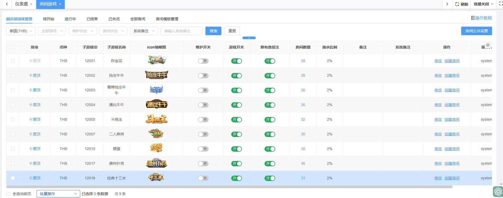
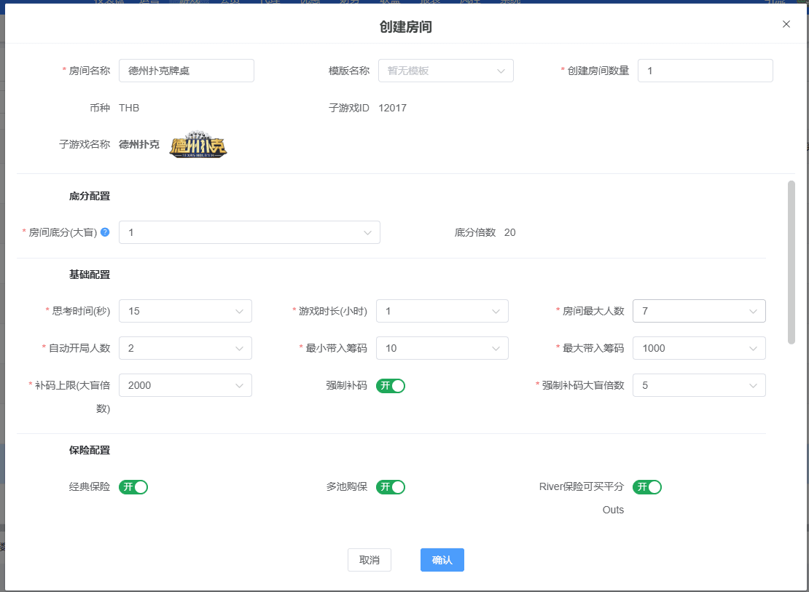
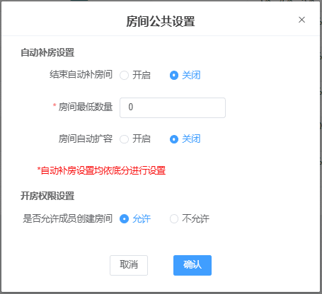
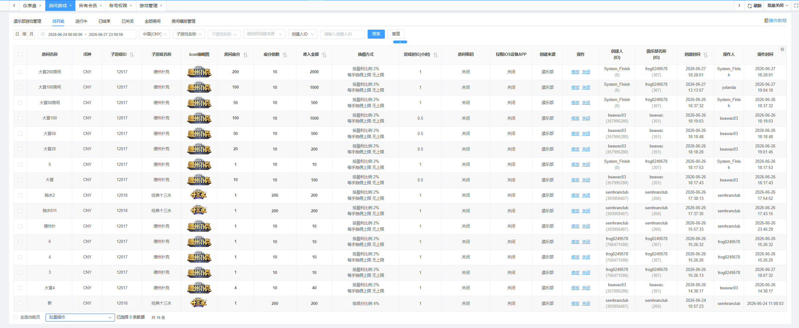
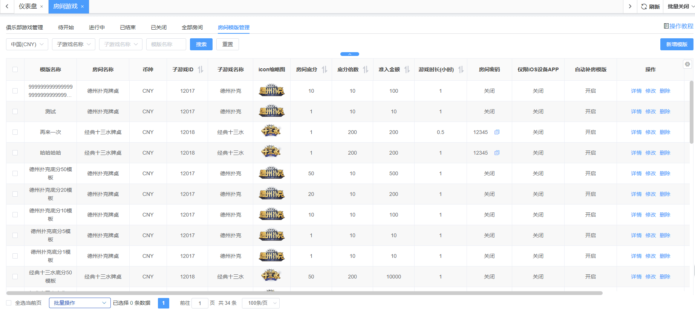

房间游戏
概述：当皮肤版式选择俱乐部版时, 可以透过房间游戏相关页面配置对应的房间游戏开关及创建游戏房间等功能
页面说明
（1）游戏管理：对所有房间游戏进行管理，包括设置游戏的排序、维护、游戏开关、有效投注、模版设置、创建房间、房间公共设置等
- icon缩略图： 后台当前使用中文语系时取中文版图片展示, 使用非中文语系时, 统一使用英文版图片
- 维护开关：设置游戏维护状态的控制操作。
- 游戏开关：设置游戏开启/关闭状态的控制操作。
- 算有效投注开关：设置游戏是否计算有效投注。
- 房间数量: 展示该游戏「待开始」以及「进行中」的房间总数, 点击可跳转至全部房间页面查看。
- 修改：支持修改抽水比例(限制2~10%, 默认2%)及备注, 多品牌站点只有主站可以操作, 子站为置灰禁用状态
- 创建房间：
- 游戏维护时不可创建房间, 创建房间按钮隐藏
- 支持主子品牌分别设置
- 选择房间底分后自动带入对应的底分模版数据, 支持修改
- 创建房间数量 - 必填, 默认1, 不得低于1, 根据设置的数量创建对应配置的房间总数
- 支持新增、删除, 可同时创建多个底分的房间
- 准入金额字段: 选中底分后, 自动计算出该房间的准入金额
- 房间密码限制必须为4位数字(经典十三为5位数字)
- 房间数量限制: 50/每个游戏, 超出限制即在创建房间弹窗内展示红字体提示语内容:「该游戏当前房间数为 xx，最多可创建 50 个，本次新增已超出上限。」
- 房间公共设置：
- 结束自动补房间：设置所有房间自动补房开启/关闭状态
- 房间最低数量：设置所有房间最低数量
- 房间自动扩容：设置所有房间自动扩容开启/关闭状态
- 开房权限设置：设置是否允许成员创建房间，且同步校验会员本身是否具有创建房间权限，二者均有权限时，成员才能创建房间



（2）待开始：列出所有「待开始」状态的房间数据
- icon缩略图： 后台当前使用中文语系时取中文版图片展示, 使用非中文语系时, 统一使用英文版图片
- 房间密码： 如果为开启状态时需展示出明文密码及复制按钮
- 没选择游戏时, 列表仅展示通用字段, 选中游戏才展示对应的字段内容
- 修改：支持主子品牌分别设置
- 关闭：操作关闭后直接关闭该房间
- 批量修改／批量关闭房间：单次限制操作20笔数据

（3）进行中：列出所有「进行中」状态的房间数据
- icon缩略图：当前使用中文语系时取中文版图片展示, 使用非中文语系时, 统一使用英文版图片
- 没选择游戏时, 列表仅展示通用字段, 选中游戏才展示对应的字段内容
- 房间密码：如果为开启状态时需展示出明文密码及复制按钮
- 剩余时长(小时)：展示当前房间剩余时间
- 房间最大人数：需展示当前房间人数及最大人数, 如: 3/5
- 已抽水：展示当前房间已抽水金额
- 强制关闭：操作强制关闭后将于下一轮结束后关闭房间
- 批量强制关闭房间：单次限制操作20笔数据
- 强制关闭/批量强制关闭弹窗：勾选项「自动禁用该账号创建房间权限」，即可控制创建房间的该账号是否有权限创建房间，此处禁用账号创建房间权限后，可在会员管理-详情页面中再次开启
（4）已结束、已关闭：分别列出所有「已结束」状态及「已关闭」状态的房间数据, 「已关闭」为手动关闭/强制关闭的房间
- icon缩略图：当前使用中文语系时取中文版图片展示, 使用非中文语系时, 统一使用英文版图片
- 没选择游戏时, 列表仅展示通用字段, 选中游戏才展示对应的字段内容
- 日期搜索 - 默认选中本周, 可查询六个月前数据, 单次查询限最多30天
（5）全部房间：列出所有状态的房间数据
- icon缩略图：当前使用中文语系时取中文版图片展示, 使用非中文语系时, 统一使用英文版图片
- 没选择游戏时, 列表仅展示通用字段, 选中游戏才展示对应的字段内容
- 日期搜索：默认选中本周, 可查询六个月前数据, 单次查询限最多30天
- 房间最大人数：待开始及进行中房间需展示当前房间人数及最大人数, 如: 3/5, 已关闭及已结束房间只需展示房间最大人数
- 状态 - 待开始(蓝色)、进行中(橘色)、已结束(灰色)、已关闭(红色)
（6）房间模版管理：维护所有房间模版数据, 包含新增、修改、删除, 列表仅展示通用字段, 其余内容在详情里面
- 新增模版：
- 支持多品牌同时设置, 品牌下拉选单改为多选并增加全部品牌选项
- 支持自定义模版名称, 字数限制50, 支持中文、英、数字、符号
- 模版配置项内容根据选中的子游戏做对应展示，子游戏默认选中第一个
- 详情：根据不同的游戏展示对应的模版配置项内容
- 修改：根据不同的游戏展示对应的模版配置项内容, 支持修改模版配置
- 删除：删除指定模版
- 批量删除：批量删除选中模版
- 批量修改：仅支持修改相同游戏模版,且根据不同的游戏展示对应的模版配置项内容, 一次最多修改20个模版

（7）其他(游戏相关配置项说明):